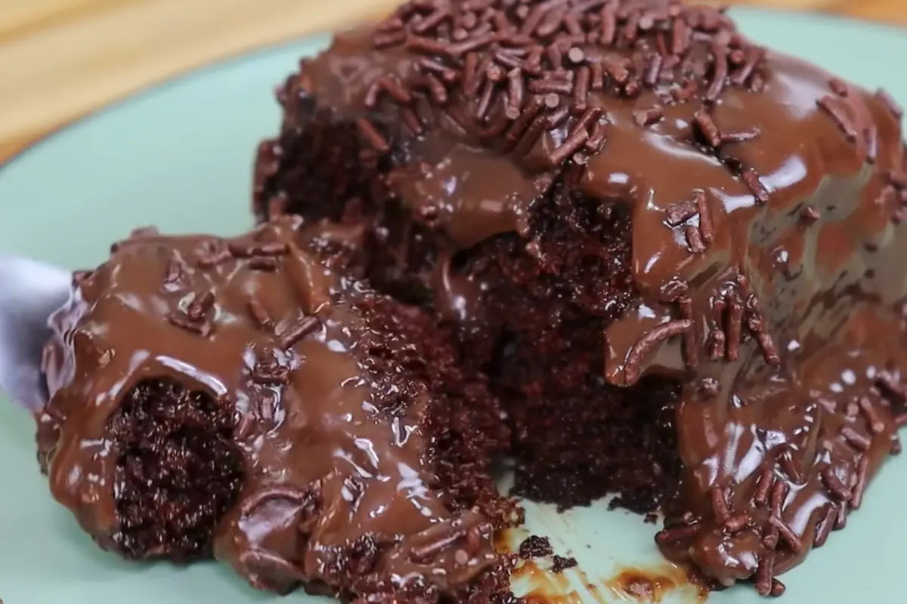

Bolo de Chocolate

⏰ Tempo de Preparo: 1 hora
🔥 Tempo de Forno: 40 minutos
👥 Rendimento: 8 pessoas
🍰 Ingredientes:
1. 3 Ovos
2. 3 Xícaras de Farinha de Trigo
3. 2 Xícaras de Açúcar
4. 2 Xícaras de Leite
5. 1 Xícara e ½ de Achocolatado em Pó
6. 3 colheres de Manteiga
7. 1 colher de Fermento em Pó
📄 Modo de preparo:
1. Misture os ovos com o açúcar;
2. Adicione o leite;
3. Adicione a manteiga;
4. Aos poucos adicione a farinha de trigo e o achocolatado;
5. Misture os ingredientes até obter uma massa homogênea;
6. Coloque para assar a 180°, por 40 minutos, em uma forma untada com margarina;
😋 Dica!
Esse bolo fica muito melhor com calda :)
1. 1 caixa de Leite Condensado;
2. 1 caixa de Creme de Leite;
3. 5 colheres de Achocolatado em Pó
Modo de Preparo:
1. Misture todos os ingredientes;
2. Continue misturado em fogo baixo até engrossar;
3. Espere esfriar e coloque sobre o bolo;